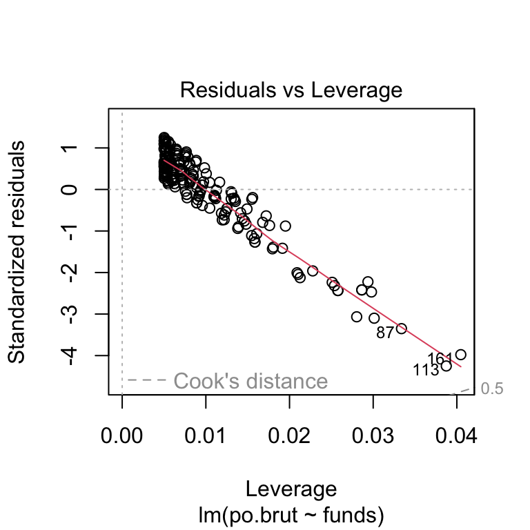

Create a folder in your computer (a good place would be under Crim 250, Exams).
Download the dataset from the Canvas website (sim.data.csv) onto that folder, and save your Exam 2.Rmd file in the same folder.
Data description: This dataset provides (simulated) data about 200 police departments in one year. It contains information about the funding received by the department as well as incidents of police brutality. Suppose this dataset (sim.data.csv) was collected by researchers to answer this question: “Does having more funding in a police department lead to fewer incidents of police brutality?”
Codebook:
Describe the dataset and variables. Perform exploratory data analysis for the two variables of interest: funds and po.brut.
dat <- read.csv(file = 'sim.data.csv')
dim(dat)## [1] 200 3names(dat)## [1] "po.dept.code" "funds" "po.brut"summary(dat$funds)## Min. 1st Qu. Median Mean 3rd Qu. Max.
## 21.40 51.67 59.75 61.04 72.17 99.70summary(dat$po.brut)## Min. 1st Qu. Median Mean 3rd Qu. Max.
## 0.00 14.00 19.00 18.14 22.00 29.00The dataset consists of 200 observations (rows) of three different variables (columns). This dataset contains simulated data on 200 police departments in year, providing information on their funding received and police brutality rates. The variable funds refers to the amount of funding received by the police department in a year in millions of dollars. The variable po.brut refers to how many instances of police brutality were reported in the department for the same year..
# Remember to remove eval=FALSE!!
library(datasets)
library(dplyr)
reg.output <- lm(formula = po.brut ~ funds, data = dat)
summary(reg.output)##
## Call:
## lm(formula = po.brut ~ funds, data = dat)
##
## Residuals:
## Min 1Q Median 3Q Max
## -3.9433 -0.2233 0.2544 0.5952 1.1803
##
## Coefficients:
## Estimate Std. Error t value Pr(>|t|)
## (Intercept) 40.543069 0.282503 143.51 <2e-16 ***
## funds -0.367099 0.004496 -81.64 <2e-16 ***
## ---
## Signif. codes: 0 '***' 0.001 '**' 0.01 '*' 0.05 '.' 0.1 ' ' 1
##
## Residual standard error: 0.9464 on 198 degrees of freedom
## Multiple R-squared: 0.9712, Adjusted R-squared: 0.971
## F-statistic: 6666 on 1 and 198 DF, p-value: < 2.2e-16Does having more funding in a police department lead to fewer incidents of police brutality? The linear regression of these two variables leads us to believe that there is a strong possibility that there is a correlation between funding in a police department and instances of police brutality. It is unclear yet whether this is a causal relationship or not.
The estimated coefficient is -2.6455. The standard error is 0.0324. The p-value is <2e-16. This relationship is very obviously statistically significant, as the p-value is significantly less than 0.05.
# Remember to remove eval=FALSE!!
library(datasets)
plot(dat$funds, dat$po.brut, main="Relationship between Police Department Funding and Reports of Police Brutality",
xlab="Funding (millions of dollars per year)", ylab="Reported Instances of Police Brutality per year")
abline(reg.output, col = "red", lwd=2)Does the line look like a good fit? Why or why not?
This line does look like a good fit. The plot generally follows the plots on the line, accounting for the curvature of the scatter plot in its slope.
# plot 1 & plot 2, residuals vs x
plot(dat$funds, dat$po.brut, ylim=c(-15,15), main="Residuals vs. x", xlab="x, Funding (millions of dollars per year)", ylab="Residuals")
abline(h = 0, lty="dashed")# plot 3
plot(reg.output, which=3)# plot 4, qq and outlier condition
plot(reg.output, which=2)plot(reg.output, which=5) The four assumptions are as follows: linearity, independence, equal variance, and normal population. The first assumption - linearity - is satisfied because the first plot of the residuals vs x has a straight line of plots. The second assumption - independence - is satisfied because the plot of residuals vs x does not display any distinct patterns. The third assumption - equal variance - is not satisfied because the lack of a flat line shows that the errors are not of constant variance. The fourth assumption - normal population - is debatably not satisfied because the residuals vs leverage plot shows that there are no influential cases because all cases are well inside of Cook’s distance lines.
Given the information we have, despite it being questionable whether or not all assumptions of linear regression are satisfied, we can assume that there is a strong correlation between reports of police brutality and funding received by a police department. Because there is such a statistically significant p-value of the dataset, we are able to determine that there is a relationship between these two variables. However, we can not determine that there is a causal relationship between the two because the four assumptions of linear regression are not met - this means we cannot rely as heavily on our linear model’s causality prediction.
Describe the dataset. Considering our lecture on data ethics, what concerns do you have about the dataset? Once you perform your analysis to answer the question of interest using this dataset, what concerns might you have about the results?
The dataset consists of 200 observations (rows) of three different variables (columns). This dataset contains simulated data on 200 police departments in year, providing information on their funding received and police brutality rates. From our data ethics checklist, I worry that this dataset does not satisfy our fairness question of “Have we studied and understood possible sources of bias in our data?” This dataset is dealing with a sensitive topic - police brutality. We discussed during our ethics lecture that even AIs which are designed to do crime-related analysis have inherent biases based off of previous biased information. This dataset does not take into account the fact that there is the possibility that the location of the police department could also play a large role in the instances of police brutality, maybe more so than funding. We know that police brutality happens disproportionately in underrepresented minority neighborhoods. This dataset does not acknowledge this highly likely bias, a factor which could conflate the relationship between the two variables in question.